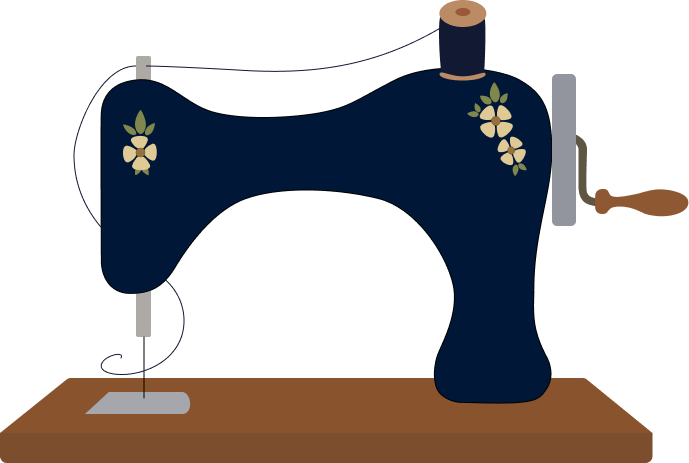

Velkommen til mit lille værksted. Herinde finder du en samling af forskellige projekter jeg har haft hænderne i. Her er både ting jeg har lavet til mig selv, til gaver, og ting der er til salg. Kig med i det jeg roder med for tiden, og se hvad der er klar til at få et nyt hjem.
Se mine kreativiteter Til salg